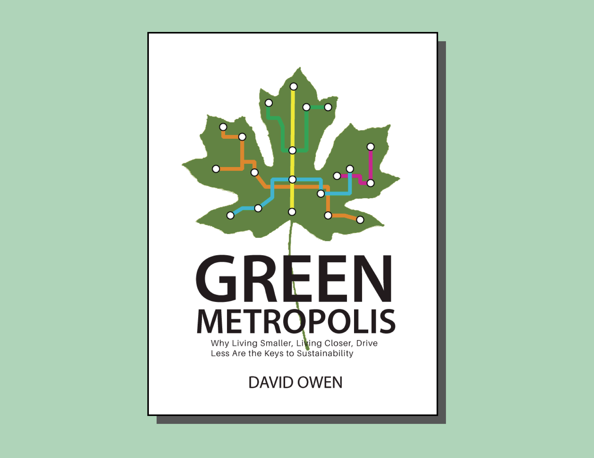
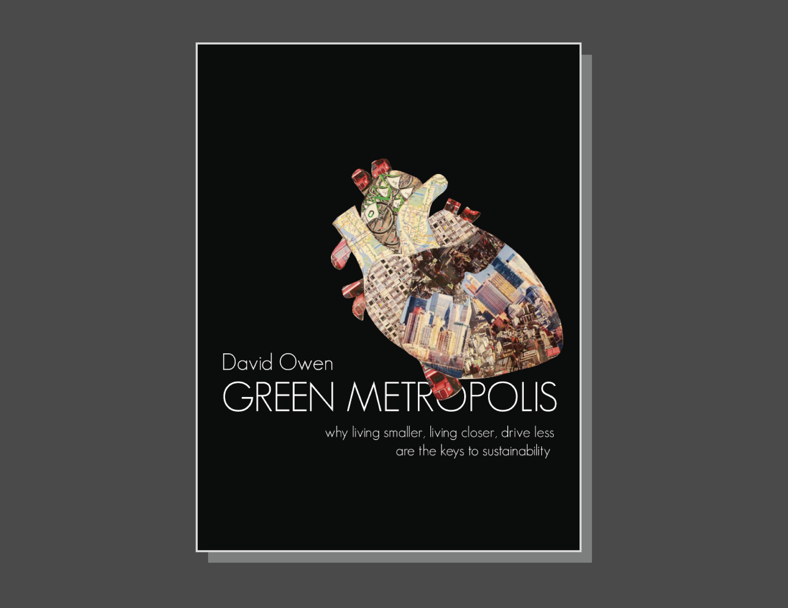
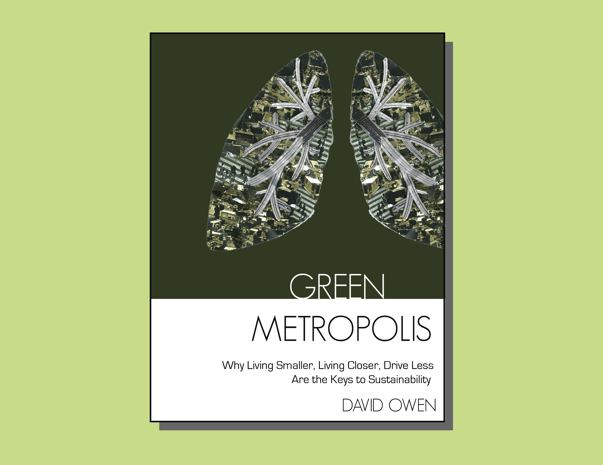
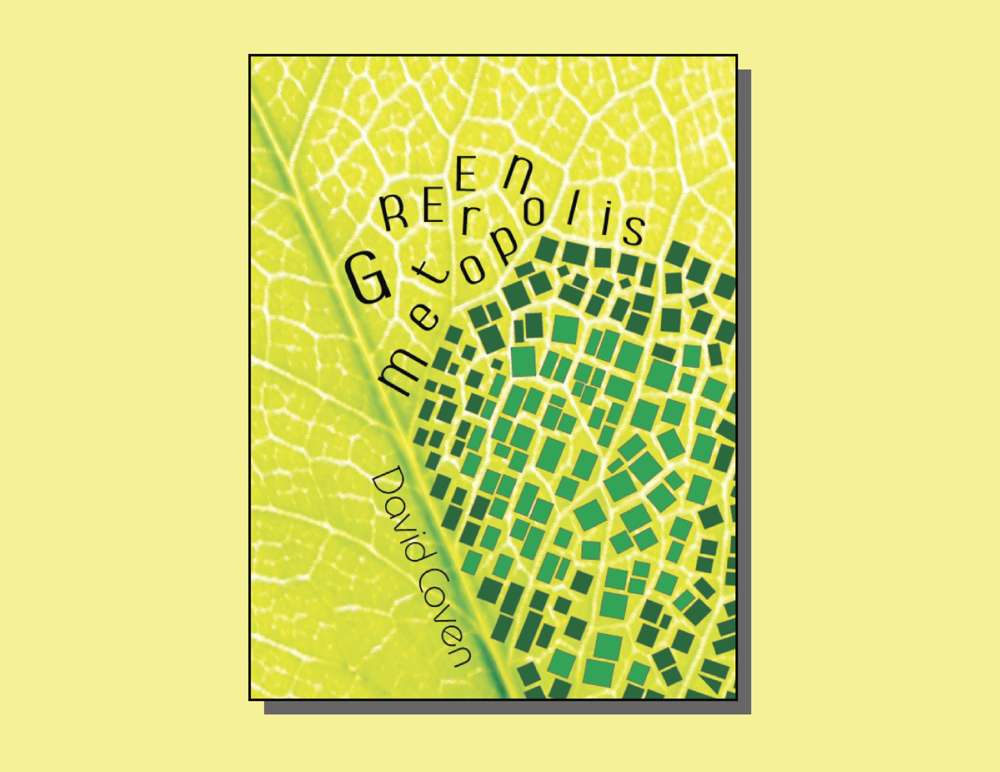

TASK
This is a class project for me to redesign the book cover for the book called Green Metropolis. The book talks about how living in the city can be more sustainable than living in the surburb.
PROBLEM
The biggest challenge of this project is how to demonstrate the idea of the book without going cliche.
PROCESS
First ideas are never good. At early stage, I struggle with a lot of cliche ideas such as leaves, city skyline etc.
To get away from the cliche ideas, I made a heart out of city-related images to represent sustainability. The message got misleading though because people tended to see it as more like a medical book.
I used more green and replaced the heart with a liver. However, but the message that got across was still misleading. Eventually, I decided to go with another idea.
The new idea is to make the city blocks to sit on the leaf cells to show the idea of density and sustainability. The message delivered is well understood but the execution of the idea needs to be further improved.
END PRODUCT

The end product satisfies the goals I am trying to achieve:
■ The imagery delivers a clear message about the book in a creative way
■ The tone of the imagery fits the book's personality
■ The composition of the imagery is dimensional
WHAT I LEARNED
Creativity and cliche are neighbors. The same element used which is a leaf in this case can be cliche in one design but creative in the other.
Sometimes only cliche can communicate the message. Then the execution can be very important in differentiating good and bad designs.
Therefore, I strive to enhance my visual skill because I believe execution is an important element in being a successful designer.
Instructor Karen Cheng
Date Spring 2015
Duration 3 weeks